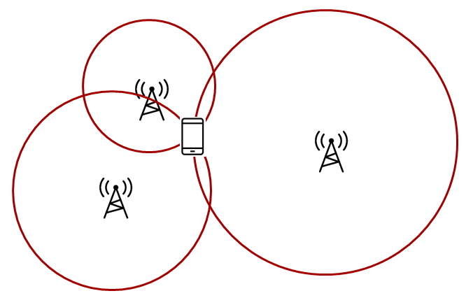

RTLS Toolbox¶
Warning
Only CTE Tx is supported on the CC13x1x3 or CC26x1x3 devices. Enabling CTE Rx feature on CC13x1x3 or CC26x1x3 devices will result in unexpected behavior in the BLE5-Stack.
Note
The RTLS examples, documentation and tools have been updated to follow the Appropriate Language nomenclature directive from Bluetooth SIG. Existing E2E threads will not be modified and may use the terms rtls_master and rtls_slave instead of rtls_coordinator and rtls_responder.
The RTLS (Real Time Localization System) Toolbox, is a collection of RTLS techniques that can be implemented on TI’s standard Bluetooth Low Energy radios in the CC26xx series. These techniques provide raw data that can be utilized for developing localization algorithms and secure range bounding other Bluetooth Low Energy nodes. The two main techniques included in the RTLS toolbox are RSSI and Bluetooth Core Specifications Version 5.3 Angle of Arrival.
RSSI details the Received Signal Strength Indication of an incoming signal and is commonly leveraged for deriving the distance between a receiver and a transmitter through the process of trilateration in localization algorithms. The Bluetooth Low Energy stack enables developers to receive the RSSI of an incoming Bluetooth packet.
Bluetooth Core Specifications Version 5.3 Angle of Arrival is a technique for finding the direction that an incoming Bluetooth packet is coming from, creating a basis for triangulation. The device samples an incoming constant tone and as I/Q data. This raw I/Q data represents the amplitude and phase data of a signal and this data can be used to derive the angle the device transmitting the constant tone.
For detailed information on the specific example, see the relevant README.html file in the simplelink_cc13xx_cc26xx_sdk_x_xx_xx_xx/examples/rtos/CC26X2R1_LAUNCHXL/ble5stack/PROJECT folder.
Using the raw data provided by the RTLS Toolbox, TI is enabling developers to improve localization algorithms based on Bluetooth technology by delivering more data that can be leveraged for trilateration and triangulation.
The inherent flexibility of the CC13xx or CC26xx RF Core is what enables this significant extension of functionality. The main advantages using the CC13xx or CC26xx are that customers can start adding RTLS features and security with little extra cost, very little extra energy consumption and no increase in peak power.
There are two fundamentally different approaches for localization:
Trilateration |
Triangulation |

|
|
Trilateration is where you know the distance between a reference node and a target node. This means that the possible locations seen by one locator constitute a circle, so typically three locators are needed to find a single common intersect point. (Assuming a 2D scenario) RSSI Based Localization gives you the distance from the receiver to the transmitter. |
Triangulation is where you know the direction from a reference node to a target node. This means that the possible locations seen by one locator constitute a straight line, so two nodes will be enough to determine a single intersect point. (Assuming a 2D scenario) Angle of Arrival gives you the angle from the receiver to the transmitter. |
Note
Existing examples with no external control interface are discontinued. All RTLS examples now have an external control interface.
General RTLS Software Architecture¶
The diagram below shows the RTLS software architecture.
With multiple nodes that collect localization data, it is important to have an architecture that supports control of these nodes. It must be possible to configure and trigger localization and it must be possible to retrieve localization data. We achieve this by reuse of our Network Processor Interface (NPI). It is basically a means to support Remote Procedure Calls (RPC) over a serial interface. Note that the architecture is such that it is possible to replace NPI with your own preferred serial protocol.
In our example we use UART as the serial transport layer. This is because it is readily available on host PC as UART over USB, and our LaunchPads include a UART to USB bridge. Along with the embedded examples we provide PC software to act as host, to control, retrieve and present localization data. This also allows much quicker customer performance characterization, as well as configuration of important parameters, not to mention the ability to develop and test higher level post-processing algorithms.
RTLS Toolbox¶
The RTLS toolbox is a collection of software that is purposed for the localization use case. A table below summarizes each software component in the toolbox as well as its applications for localization. The software components below will run on the embedded nodes.
Software Component |
Usage |
|---|---|
BLE-Stack |
Advertising, scanning, connection, exchanging RTLS data |
Connection Monitor |
Follows a BLE connection using Micro BLE-Stack |
Angle of Arrival |
Radio patches and driver to read AoA data embedded in BLE packets |
Unified Network Processor Interface (UNPI) |
A serial protocol including packet format and handshaking for power savings |
RTLS Control Module |
Implements the command and event set used to communicate RTLS information between devices. This runs on the embedded devices and translates UNPI frames into the necessary AoA function calls |
The software components in the following table run on a PC. TI has setup a PC based environment to facilitate in evaluating and prototyping various RTLS algorithms. Once the algorithms are complete, the various PC components above can be migrated to an embedded device.
Software Component |
Usage |
|---|---|
RTLS Util |
Event handling and distribution across nodes. Implements results queues, and setting up worker threads for data handling. |
RTLS Node Manager |
Framework for sending and receiving RTLS commands and events from the embedded devices to PC. Implements higher level logic such as forwarding necessary BLE connection information to the connection monitor node. |
RTLS Utility¶
The RTLSUtil module is a convenience layer that is built on top of the node manager that implements event handling and blocking as required by the RTLS network (e.g. seed distribution). Additionally the RTLSUtil module is able to setup worker threads for data processing of results from the device as well as creating queues to store the incoming data.
RTLS Node Manager¶
The RTLS Node Manager provides the following functionality:
A bridge between host processor and CC13xx or CC26xx
Holds the state of each device and takes care of configuration
Enables the simplicity of RTLS Control Module
Due to the above functionality, the Node Manager can operate on user’s CPU and help with slow bus (LIN/CAN).
RTLS Control Module¶
The RTLS Control Module is an on-chip module which runs as a RTOS Task and it provides the following functionality:
Parsing commands coming from Node Manager
RTLS Driver configuration and operation
RF and NPI message queue
RTLS Roles and Topology¶
Each node in an RTLS network utilizes the software components listed above in a
different way to perform a specific task related to localization. These
capabilities map to a role within the RTLS network and ultimately are implemented
by sample applications within the SDK. There are three examples: rtls_coordinator,
rtls_responder, and rtls_passive. The capabilities of these examples are
explained below. All embedded nodes implement UNPI and act as responders in the UNPI
protocol. Additionally all embedded nodes have the RTLS Control module implemented
for processing RTLS commands from the UNPI interface.
Note
The following subsections aim to describe what localization roles are implemented by the sample applications in the SDK. This is not a comprehensive list of what is possible on each node, but rather an explanation of what the examples will do out of the box. For a list of potential combinations, please see Role Combinations.
Coordinator¶
The RTLS coordinator runs a full BLE5-Stack and is based on the multi_role example.
In the case of connection AoA, it scans and connects to the RTLS responder over BLE. Once a connection is established the RTLS Coordinator does the following.
Share the connection parameters (access address, coordinator sleep clock accuracy, and CRC init) with the PC.
Use the BLE link to share AoA parameters with the responder device.
Implements the AoA coordinator role
Does not send out AoA packets, but configures the responder to do so (in the case of connection AoA)
In the case of connectionless-AOA, the RTLS Coordinator does the following.
Synchronizes with periodic advertisements sent by the responder (in the case of connectionless AoA)
Receives packets with CTE and performs in-phase and quadrature component (IQ) sampling
Responder¶
The RTLS responder runs a full BLE5-Stack. It is based on the multi_role example. This is the device that is to be located. In the case of connected Aoa, the responder device will advertise and enter a connection with the RTLS Coordinator. In the case of connectionless AoA, the responder sends out periodic advertisements the coordinator can synchronize with.
Sends data packets with AoA tone embedded using Constant Tone Extension (CTE)
Advertises special string to be detected by
rtls_coordinator(in the case of connection AoA)Advertises periodic advertisements (in the case of connectionless AoA)
Implements AoA responder role
Wireless/battery operated, not connected to PC
Passive¶
The RTLS passive does not actively participate in the BLE connection between the RTLS coordinator and responder. Instead, it uses the Micro BLE Stack in connection monitoring mode to follow the connection. To do this, the passive device relies on the Coordinator to distribute the connection parameters once a connection is formed. The passive node does the following:
Implement AoA passive role
Receives packets with CTE and performs in-phase and quadrature component (IQ) sampling
Implements the Micro BLE-Stack connection monitoring application layer. See Connection Monitor (CM) Application for more information on the connection monitor.
Note
The rtls_passive device is not used for Connectionless AoA.
PC/Central Processing Node¶
The PC node is responsible for controlling the embedded RTLS nodes by sending commands and processing events. In the SDK, this is realized by Python layer that implements the UNPI coordinator role.
This software is intended to use as a framework for extracting data from the embedded nodes and using it to prototype high level RTLS algorithms on the PC.
Note
In a final product, these algorithms may be implemented on an embedded device or even perhaps the RTLS coordinator node. TI has provided PC software to aid in prototyping various algorithms.
The PC implements the following roles in Python:
UNPI coordinator
COM port interface
Implementation of RTLS UNPI subsystem/command set
The PC implements the following roles in RTLS UI GUI/JavaScript:
Parsing JSON objects to extract IQ data
Enumerate devices
Distribute connection parameters to passives
Role Combinations¶
Note
In all of the tables following (BLE, AoA) features listed as optional are not implemented by the sample applications included in the SDK, but are valid and possible configurations that can be implemented by the user.
For example: rtls_coordinator could be a multi-role device or rtls_passive could
operate as AoA coordinator.
BLE-Stack¶
The Bluetooth Core Specifications Version 5.3 allows for devices to operate in various roles as well as combinations of roles. The table below shows the required and optional features for each example.
Example Name |
Central |
Peripheral |
Broadcaster |
Observer |
|---|---|---|---|---|
RTLS Coordinator |
R** |
R** |
O |
R |
RTLS Responder |
R** |
R** |
R |
O |
RTLS Passive |
No |
No |
O |
R* |
Legend:
R: Required
O: Optional
No: Not supported
Note
The R* above denotes that while the connection monitor is capable of scanning
for beacons, it is also required that the connection monitor follow a connection.
The monitoring role is not officially defined by the Bluetooth Spec, but it is
a critical functionality in the rtls_passive.
The R** above denote that coordinator and responder can be either central or peripheral as long as coordinator and responder can form a connection. TI’s out of the box coordinator has central role and responder has peripheral role.
AoA¶
The Bluetooth Core Specifications Version 5.3 defines multiple roles for both connected and connection-less AoA. The following configurations are supported by the examples in the SimpleLink CC13xx/CC26xx SDK.
Example Name |
Send CTE |
Perform IQ Sampling |
|---|---|---|
RTLS Coordinator |
No |
R |
RTLS Responder |
R |
No |
RTLS Passive |
N/A |
O |
Legend:
R: Required
O: Optional
No: Not supported
N/A: Not applicable
For connection AoA, an AoA Coordinator / Passive is capable of connecting to / monitoring up to and including eight AoA responders simultaneously.
For connectionless AoA, an AoA Coordinator is capable to synchronize with up to 40 responders.
When the number of responder synchronized with the coordinator is big, some of the periodic
advertisements may not be received. In addition, the number of buffers allocated to
CTE sampling has to be big enough (see MAX_NUM_CTE_BUFS)
RTLS Driver¶
The purpose of RTLS Driver is to handle the Direct Call implementation of the RTLS module.
For more detail please take a look at AoA Driver section.
Physical Considerations¶
Before evaluating the RTLS solution, it is important to consider the environment. All radio communication protocols can be susceptible to multi-path fading, and RTLS based systems are not exempt. It is important to control the environment when evaluating or at least be aware of the potential effects of multi-path on the results.
It is recommended to evaluate the RTLS solution in an area that optimizes RF conditions. This includes:
An open space with no large metal or concrete obstructions (pillars, poles, etc.)
Relatively few interference sources (i.e. Wi-Fi access points, etc.)
Raised platforms for the nodes made out of cardboard ~1 m off the ground.
A desk environment generally has sub-optimal RF conditions and should be avoided.
See the image below for a recommended layout of the nodes during evaluation, this is a 2D image where all devices are laying on a flat surface “pointing” as shown in the picture. In this case each node should be placed on a box so that it does not sit directly on the ground.
For angle of arrival application, we have created Bluetooth Angle of Arrival Antenna Design to further explain what users should look for when making their own AoA board.
Tip
The examples provided within the SimpleLink CC13xx/CC26xx SDK are not tied to a specific antenna board design. They can be configured through Sysconfig to work with the antenna board designed by the user (see GPIO configuration).
RSSI Based Localization¶
RSSI details the Received Signal Strength Indication of an incoming signal and is the most commonly used method of trilateration localization in Bluetooth. TI Bluetooth low energy stack enables developers to receive the RSSI of an incoming Bluetooth packet with can be used to enable RTLS algorithms.
RSSI localization is based on the Frii’s Transmission Equation. The core concept is that received signal strength is proportional to the distance of the transmitting node. The graphic below describes how RSSI can be used to estimate distance.
Figure 133. Frii’s Equation Relationship between received power and distance.¶
While RSSI based localization is the most commonly used method in today’s RTLS systems, it also faces challenges that need to be overcome:
Accuracy can be influenced by the presence of reflections and obstructions
No Relay Attack protection
Some of these challenges with RSSI can be overcome through smart system design. TI’s RTLS Toolbox enables developers to monitor the connection between a coordinator and responder and get independent RSSI measurements from the same packet via the Connection Monitor. This approach gives more data and reference points that can be used to help improve the resolution of an RTLS application.
For future RTLS applications, it is recommended to combine RSSI with the other localization techniques such as AoA to help improve the accuracy and security.
Reading RSSI¶
The Micro BLE Stack (foundation of the Connection Monitor (CM) Application) and the full BLE5-Stack
provide APIs to read RSSI information of the received packet. The following sections will describe how to extract RSSI information from the received packet.
Connection Monitor¶
The connection monitor will keep an array of connection information
for each connection it is tracking. This includes coordinator and responder RSSI
from the last scan. These fields can be found in the ubCM_ConnInfo_t
structure. The fields are rssiCentral and rssiPeripheral respectively.
RSSI information is valid after the monitor complete callback is invoked (when the monitoring scan is complete for a connection event).
The rtls_passive sample application shows an example of extracting
responder RSSI in RTLSPassive_monitorCompleteEvt.
Keyless entry with TI connection monitor¶
This video explains the concept of using TI Connection Monitor to monitor Bluetooth Low Energy communications to estimate the distance between the connection monitor and Bluetooth LE enabled devices. This can be used in applications such as car access or remote keyless entry.
BLE(5)-Stack¶
When using the BLE5-Stack, the Gap_RegisterConnEventCb (Generic Access Profile (GAP)) will provide
RSSI from the last connection event. It can be used in the central or peripheral
configuration. The Connection Event Callback is already the synchronization
method used by the RTLSCtrl module for reporting data to the PC/Node
Manager.
In the case of communication that consists of multiple packets, only the RSSI of the last received packet is reported. There is no averaging over channels. In general, the received signal strength will vary across channels due to varying channel conditions and antenna gains. This has the following consequences in regards to BLE:
Advertising: The RSSI will only be reported on the last advertisement channel that data is received on.
Connection Events with multiple data packets: These occur on the same channel but the RSSI will still only be reported for the last data packet that was received.
Note
The algorithm that calculates RSSI is the same algorithm for all BLE channels.
Calculation Detail¶
The RSSI value is a measurement of the actual power level delivered to the input of the reference design RF matching and balun. A valid range for RSSI signals is approximately -90dbm to -30dBm. Note that it is not easy to directly correlate RSSI to distance as it is highly dependent on the antenna design and polarization of both the transmitter and the receiver antenna.
The RSSI can have negative tolerance which means that if you are receiving on the sensitivity limit, reported RSSI can potentially be lower than this. The sensitivity can be found in the device datasheet and is in accordance with Bluetooth requirements.
The RSSI performance will be the same between both single ended and differential configurations and the expected accuracy is +/-4 dBm as stated in the datasheet.
Advantages of a connection based RSSI system¶
A connection based RSSI system relies on a Bluetooth Low Energy connection. The RSSI of the signal received during the connection event is measured. The advantages of this technique against connectionless based RSSI system are:
The Bluetooth Low Energy connection ensures the identity of the target device.
The number of possible RF channels used is increased from 3 to 37. This increases the system’s robustness to interferences.
The energy consumption of the passive devices is smaller as they are not continuously scanning.
Advantages of a connectionless based RSSI system¶
A connectionless based RSSI system locates beacons without forming a Bluetooth Low Energy connection. The RSSI of the advertisements is measured. The advantages of this technique against connection based RSSI system are:
The complexity of the system is reduced as there is no need for sharing the connection parameters between the passive-nodes.
The number of targets that can be tracked simultaneously is slightly bigger (fewer resources are required to keep track of a non-connected device than a connected device).
Angle of Arrival¶
Note
The CC13xx or CC26xx and the SimpleLink CC13xx/CC26xx SDK support Bluetooth Core Specifications Version 5.3 compliant Angle-of-Arrival (AoA) features. The BLE5-Stack allows the user’s application to collect I/Q data and use them to calculate angle.
End product implementation incorporating AOA locator technology requires advanced knowledge and further integration by the customer that would not normally be required in a product using Bluetooth LE for communication purposes. Some challenges the customer may be required to address with AoA in their product include, but are not limited to, the following:
Embedded or system-level algorithms to achieve desired localization performance/angular accuracy while mitigating the presence of undesired signals (e.g. multi-path reflections) in various operating environments
Antenna design to match the end product’s industrial design constraints and/or performance expectations
The SimpleLink CC13xx/CC26xx SDK provides the rtls_agent and rtls examples helping to control the IQ data sampling process. The BLE5-Stack showcases IQ sampling for both connection and connectionless modes, and also offers the possibility to tune IQ data sampling parameters - such as the number of antennas, the switching pattern, the sampling frequency, and the sampling slot.
Implementations leveraging AoA direction finding targets (CTE TX only) do not require such advanced knowledge and can directly leverage the
rtls_responderexample provided in the SDK.
Angle-of-Arrival (AoA) is a technique for finding the direction that an incoming Bluetooth packet is coming from, creating a basis for triangulation.
An array of antennas with well-defined properties is used, and the receiver will switch quickly between the individual antennas while measuring the phase shift resulting from the small differences in path length to the different antenna.
These path length differences will depend on the direction of the incoming RF waves relative to the antennas in the array. In order to facilitate the phase measurement, the packet must contain a section of constant tone (CT) where there are no phase shifts caused by modulation.
Packet Format¶
In order to get a good estimate of ϕ (phase), all other intentional phase shifts in the signal should be removed.
Bluetooth Core Specifications Version 5.3 introduces AoA/AoD which are
covered under Direction Finding Using Bluetooth Low Energy Device section
and it also specifies the following
states can support sending direction finding packets:
Periodic advertising; also called
Connectionless CTEConnection; also called
Connection CTE
The theory behind AoA/AoD and Connectionless/Connection CTE(Constant Tone Extension) is the same, therefore, we will only focus on Connection CTE AoA. Both Connection CTE and Connectionless CTE are provided in BLE5-Stack.
First let’s take a look at the payload. By adding a section of consecutive 1’s at the end of connection packet, effectively transmitting a single tone at the carrier frequency + 250 kHz.

In the header, the CP bit (CTE Present) determines whether header
contains CTEInfo or not.
The CTEType field of CTEInfo further specifies which type of direction finding
packet this is and the CTETime field specifies the duration of the CTE.
Table 25. CTEType value¶ Value
Description
0
AoA CTE packet.
1
AoD CTE with 1 µs slots.
2
AoD CTE with 2 µs slots.
The value of CTETime should be within 2~20 and it’s interpreted as
in 8us unit. That means when CTETime is set to 20, there will be
CTE at the end of connection packet which lasts 8*20 = 160(us).
This gives the receiver time to synchronize the demodulator first, and then store I and Q samples from the single tone 250 kHz section at the end into a buffer and the buffer can then be post-processed by an AoA application
Note
The I/Q Data Sample is the coordinates of your signal as seen down the time axis. In fact, I/Q data is merely a translation of amplitude and phase data from a polar coordinate system to a Cartesian (X,Y) coordinate system and using trigonometry, you can convert the polar coordinate sine wave information into Cartesian I/Q sine wave data.
Integration¶
The I and Q samples from the transmitted carrier frequency + 250 kHz tone can be captured, pre-processed, and buffered by the RF Core without any load on the main MCU.
Due to the pre-processing, the application can determine the phase shift without having to remove DC offset or IF first, significantly simplifying the estimation process and leaving the application MCU free to do more on top.
For rtls_passive, the I/Q sampling rate is currently not configurable and
it is 4 MHz. Each I/Q pair occupies 32 bits space in radio RAM and the
radio RAM can store up to 512 samples (i.e. 2048 bytes - 2 kB).
This limitation is only due to the micro-stack which limits the amount
of data read in the Radio RAM. The radio RAM length is 4 kB.
With sampling rate 4MHz, there will be 16 I/Q pairs every 4us, which equals to 16 * 4 (one I/Q pair takes up 4 bytes space) = 64 bytes per 4us.
That means even if the CTE is 160us long with 4MHz sampling rate,
the radio RAM for rtls_passive can only store I/Q data for 128us duration.
There is currently no workaround for it unless we shorten the CTE
length. This is not an issue for rtls_coordinator.
Note
For rtls_passive, I and Q samples only have 13 bits resolution even though
they occupy 16 bits space in RF Core RAM.
Since they only have 13 bits resolution, the maximum and
minimum value you will observe as signed integers are [4095, -4096].
For rtls_coordinator, the I/Q sampleRate Setting is configurable and it’s from 1MHz up to 4MHz. Each I/Q pair occupies 32 bits space in radio RAM and the radio RAM can store up to 624 samples (2496 bytes - around 2.5kB). When the sampling frequency is maximum (4 MHz), exactly 624 samples are stored during each CTE. (The CTE lasts 160 us, minus 4 us of guard period. When sampling frequency is 4 MHz, in 156 us, 156*4 = 624 samples are stored. More details are provided in Valid I/Q Samples For Angle Calculation.)
Note
For rtls_coordinator, I and Q samples resolution is configurable, please see sampleSize Setting. You can either choose 16 bits which only have 13 bits resolution or 8 bit resolution which is Bluetooth Core Specifications Version 5.3 standard. It does not matter which resolution is chosen, each I/Q pair will always take 32 bits space in radio RAM.
The application layer passes in the antenna toggling table into RF Core, RF Core then does the antenna switching while collecting I/Q samples.
In the responder device, the RF Core ensures that the CTE is inserted at the end of the connection event packet without being distorted by the whitening filter.
In the passive and coordinator devices, the RF Core analyzes the packet and starts capturing samples at the right time while synchronizing antenna switching. The samples are left in the RF Core RAM for analysis by the main MCU
AoA Driver¶
For rtls_passive, an example that uses Micro BLE Stack,
the AoA driver is responsible for pin initialization, AoA enabling and IQ data
extraction.
AoA functionality in rtls_coordinator is implemented as Bluetooth Core Specifications Version 5.3 compliant, therefore, the initialization, AoA enabling and data extraction are moved to host module. However, users can still use RTLS Control Module to setup the wanted parameters.
Configurations Supported¶
Sampling frequency supported: 1 Mhz (Bluetooth Core Specifications Version 5.3), 2 Mhz, 3 Mhz or 4 Mhz
Sampling slot length supported: 1 us* or 2 us (both are authorized by Bluetooth Core Specifications Version 5.3). Note: Per BLE spec, the sampling slot and the switching slots must have the same duration.
Sample size supported: 8bit (Bluetooth Core Specifications Version 5.3) or 16bit
* Sampling slot of 1us is supported by the AoA driver but some limitations may exist in the hardware. The antennas switch and settle time should be considered when selecting the sampling slot length.
Data Collection Flow¶
When RF Core detects AoA packets, it will start sampling the I/Q on the tone while toggling the antenna according to a user defined period.
For rtls_passive, IQ samples will be extracted after RTLSPassive_monitorCompleteEvt()
has triggered the next sync event.
During sync event processing RTLSCtrl_postProcessAoa will enable the radio RAM,
and read out the IQ samples using AOA_postProcess()
For rtls_coordinator, IQ samples will be sent to application from RTLS Service host module
with event type RTLSSRV_CONNECTION_CTE_IQ_REPORT_EVT.
Note
For rtls_coordinator, the BLE5-Stack will filter out
the I/Q data from switching period if bit[0] in sampleCtrl is set to 0. To obtain
the full set of I/Q data, you will need to set bit[0] in sampleCtrl to 1.
Please see sampleCtrl I/Q data Filter Setting for the overview.
Note
In SimpleLink CC13xx/CC26xx SDK and later, embedded angle calculation is not available. In
accordance with Bluetooth Core Specifications Version 5.3, only IQ data are repported by the BLE5-Stack.
In other words, the only aoaResultMode is AOA_MODE_RAW.
Please refer to SDK 5.10 for an example of embedded angle calculation
implementation.
Antenna Switching¶
Switching pattern¶
Antennas toggle pattern is set in the python as part of RTLS_CMD_AOA_SET_PARAMS.
1 class AoaSetParamsReq(NpiRequest, SyncReq, FromAp):
2 command = Commands.RTLS_CMD_AOA_SET_PARAMS
3 struct = Struct(
4 "aoaRole" / Enum(Int8ul, AoaRole), # AOA_COORDINATOR, AOA_RESPONDER, AOA_PASSIVE
5 "aoaResultMode" / Enum(Int8ul, AoaResultMode), # AOA_MODE_ANGLE, AOA_MODE_PAIR_ANGLES, AOA_MODE_RAW
6 "connHandle" / Int16ul,
7 "slotDurations" / Int8ul, # 1us/2us sampling slots
8 "sampleRate" / Int8ul, # 1Mhz (BT5.1 spec), 2Mhz, 3Mhz or 4Mhz - this enables oversampling
9 "sampleSize" / Int8ul, # 8 bit sample (as defined by BT5.1 spec), 16 bit sample (higher accuracy)
10 "sampleCtrl" / Int8ul, # sample control flags 0x00-default filtering, 0x01-RAW_RF no filtering
11 "samplingEnable" / Int8ul, # 0 = mask CTE even if enabled, 1 = don't mask CTE, even if disabled (support Unrequested CTE)
12 "numAnt" / Int8ul, # Number of antennas in antenna array
13 "antArray" / Int8ul[this.numAnt], # GPIO's of antennas
14 )
Variable |
Definition |
|---|---|
numAnt |
Number of IOs RF Core should toggle during I/Q sampling |
antArray |
The IOs should be toggled during I/Q sampling. |
Note
For rtls_passive, the slotDuration, sampleRate, sampleSize, samplingEnable, numAnt and antArray are hardcoded in the embedded software. The only configurable parameter is the aoaResultMode.
Following is an example provided in our rtls_agent toolbox.
1 use_connection_aoa = True
2 slot_duration = 2
3 sample_rate = 4
4 sample_size = 2
5 enable_filter = False
6 ant_pattern = [0, 1, 2]
7
8 if use_connection_aoa:
9 # for connection-AoA
10 aoa_params = {
11 "aoa_run_mode": "AOA_MODE_RAW",
12 "aoa_cc26x2": {
13 "aoa_slot_durations": slot_duration,
14 "aoa_sample_rate": sample_rate,
15 "aoa_sample_size":sample_size,
16 "aoa_sampling_control": int('0x10' if enable_filter else '0x11',16),
17 "aoa_sampling_enable": 1,
18 "aoa_pattern_len": len(ant_pattern),
19 "aoa_ant_pattern": ant_pattern
20 }
21
22 else :
23 # for connectionless-AoA
24 aoa_params = {
25 "cl_aoa_role": "AOA_COORDINATOR",
26 "cl_aoa_result_mode": "AOA_MODE_RAW",
27 "cl_aoa_slot_durations": slot_duration,
28 "cl_aoa_sample_rate": sample_rate,
29 "cl_aoa_sample_size": sample_size,
30 "cl_aoa_sampling_control": int('0x10' if enable_filter else '0x11', 16),
31 "max_sample_cte": 1,
32 "cl_aoa_pattern_len": len(ant_pattern),
33 "cl_aoa_ant_pattern": ant_pattern
34 }
The example shows that 3 IOs(aoa_pattern_len) should be toggled during the I/Q sampling and the order for toggling is
set to 0, 1 and 2 which is mapped to the antennaTbl[] array element 0, 1 and 2 in ble_user_config.c.
Make sure the switching pattern only refers to array element referenced in antennaTbl[].
GPIO configuration¶
The GPIOs used to control antenna switching are configurable through Sysconfig. The GPIOs to use depend on the antenna board design.
Below is an example showing how to configure the example for a 12-antenna board. This is the out of the box example from the RTLS Coordinator. For each antenna, the GPIOs to set to select it should be specified. If no GPIOs need to be set to enable a specific antenna, select “None”.
Sysconfig generates the following code in ti_aoa_config.h.
1 // Antenna board configurations (example for a 12-antenna board)
2 // Maximum number of antennas
3 #define ANTENNA_TABLE_SIZE 12
4 // BitMask of all the relevant GPIOs which needed for the antennas
5 #define ANTENNA_IO_MASK BV(27)|BV(28)|BV(29)|BV(30)
6
7 // Antenna GPIO configuration (should be adapted to the antenna board design)
8 antennaIOEntry_t antennaTbl[ANTENNA_TABLE_SIZE] = {
9 0, // antenna 0 GPIO configuration (all GPIOs in ANTENNA_IO_MASK are LOW)
10 BV(28), // antenna 1
11 BV(29), // antenna 2
12 BV(28) | BV(29), // antenna 3
13 BV(30), // antenna 4
14 BV(28) | BV(30), // antenna 5
15 BV(27), // antenna 6
16 BV(27) | BV(28), // antenna 7
17 BV(27) | BV(29), // antenna 8
18 BV(27) | BV(28) | BV(29), // antenna 9
19 BV(27) | BV(30), // antenna 10
20 BV(27) | BV(28) | BV(30) // antenna 11
21 };
22
23 // Antenna properties passes to the stack
24 cteAntProp_t appCTEAntProp = {ANTENNA_IO_MASK,
25 ANTENNA_TABLE_SIZE,
26 antennaTbl};
Execution¶
Based on the switching sequence provided and the GPIO configuration, the RF Core will control the GPIOs to perform antenna switching. The switching sequence is repeated until the end of the CTE. Afterwards, the IOs will be restored to their original state.
Even though RF Core takes care of the toggling, it does not initialize the pin state.
The application should initialize the pin state by calling either AOA_initAntArray for rtls_passive or
calling RTLSSrv_initAntArray for rtls_coordinator.
This is taken care when host sends RTLS_CMD_AOA_SET_PARAMS.
For users that want to use different IOs and patterns, please visit SimpleLink Academy –> RTLS Toolbox –> Angle of Arrival –> Task 3.
The RTLS API does not provide a direct way to determine which antenna has been used to sample a given piece of data. However, knowing the antenna switch sequence and the number of samples recorded per slot, it is possible to deduce the antenna used. Please see details in Valid I/Q Samples For Angle Calculation.
Valid I/Q Samples For Angle Calculation¶
The BLE spec defines two terms “Switch slot” and “Sample slot”. The length of the switch slot and sample slot must be equal, and only two values (1us or 2us) are allowed.
At the beginning of a CTE, the number of elements to discard depends on the length of the switch and sample slots and of the sampling frequency.
The following figure presents the way the CTE is sampled. The image is copied from the BLUETOOTH CORE SPECIFICATION Version 5.1 | Vol 6, Part B | 2.5.1.
Figure 134. Constant tone sampling structure¶
When using 1us slots:
the guard period is 4us (no sampling is done during the guard period / no sample has to be discarded)
the reference period is 8us. All the samples acquired during the reference period has to be discarded (e.g. if the sampling frequency is 4MHz, it means that 32 samples have to be discarded - 8 samples have to be discarded if sampling frequency is 1Mhz)
the first switch slot (and all the others) lasts 1us. The data sampled during a switch slot has to be discarded (e.g. if the sampling frequency is 4MHz, it means that 4 samples have to be discarded during each switch slot - 1 sample per switch slot has to be discarded if sampling frequency is 1MHz).
As a result, when sampling frequency is 4MHz, the first sample to consider is the 37th. When sampling frequency is 1MHz, the first sample to consider is the 10th.
When using 2us slots:
the guard period is still 4us (no sampling is done during the guard period / no sample has to be discarded)
the reference period is still 8us. All the samples acquired during the reference period have to be discarded (e.g. if the sampling frequency is 4MHz, it means that 32 samples have to be discarded - 8 samples have to be discarded if sampling frequency is 1Mhz)
the first switch slot (and all the others) lasts 2us. The data sampled during a switch slot has to be discarded (e.g. if the sampling frequency is 4MHz, it means that 8 samples have to be discarded during each switch slot - 2 samples per switch slot have to be discarded if sampling frequency is 1MHz).
the sampling slots are divided in two
one idle slot of 1us (which allows the antenna to settle). The data sampled during the idle slot has to be discarded (e.g. if the sampling frequency is 4MHz, it means that 4 samples have to be discarded during each idle slot - 1 sample per idle slot has to be discarded if sampling frequency is 1MHz).
one sample slot of 1us (e.g. if the sampling frequency is 4MHz, 4 samples are recorded per sample slot - 1 sample is recorded per sample slot if the sampling frequency is 1MHz)
As a result, when sampling frequency is 4MHz, the first sample to consider is the 45th. When sampling frequency is 1MHz, the first sample to consider is the 12th.
The following figure presents how each sample slot is divided. This image is copied from the BLUETOOTH CORE SPECIFICATION Version 5.1 | Vol 6, Part B | 2.5.4
Figure 135. “Zoom” on a sampling slot¶
Note
It’s important to note that 1us switch slot can only be used if the antennas are able to switch and settle in less than 1us. If the antennas are not able to switch and settle in less than 1us a part of the data sampled during the sampling slot won’t be correct and will have to be discarded.
An other good way to determine what I/Q samples to use is to plot all the I/Q samples.
The picture below shows the I/Q samples which were collected using the rtls_passive
example together with rtls_coordinator and rtls_responder examples using 4MHz sampling rate
and 2us slot.
Table 27. Axis description¶ Axis
Description
X top
Angle between a rtls_responder device and rtls_passive.
X bottom
Index number of I/Q data.
Y
I/Q values.
The first 32(index 0~31) samples are taken in reference period which there is no antenna switching. Therefore the I/Q plot looks like sinusoid wave.
After that at index 32, you can see when switching happened there comes discontinuity of I/Q samples.
Note
It’s easier to see the phase discontinuity when there is indeed phase difference. Therefore, before collecting I/Q data, make sure the angle between rtls_passive and rtls_responder is not 0 degree.
AoA Functions Overview¶
Here is the list of the most important functions for AoA users.
Python¶
aoa_set_params:
1class AoaSetParamsReq(NpiRequest, SyncReq, FromAp): 2 command = Commands.RTLS_CMD_AOA_SET_PARAMS 3 struct = Struct( 4 "aoaRole" / Enum(Int8ul, AoaRole), # AOA_COORDINATOR, AOA_RESPONDER, AOA_PASSIVE 5 "aoaResultMode" / Enum(Int8ul, AoaResultMode), # AOA_MODE_ANGLE, AOA_MODE_PAIR_ANGLES, AOA_MODE_RAW 6 "connHandle" / Int16ul, 7 "slotDurations" / Int8ul, # 1us/2us sampling slots 8 "sampleRate" / Int8ul, # 1Mhz (BT5.1 spec), 2Mhz, 3Mhz or 4Mhz - this enables oversampling 9 "sampleSize" / Int8ul, # 8 bit sample (as defined by BT5.1 spec), 16 bit sample (higher accuracy) 10 "sampleCtrl" / Int8ul, # sample control flags 0x0-default filtering, 0x1-RAW_RF no filtering 11 "samplingEnable" / Int8ul, 12 # 0 = mask CTE even if enabled, 1 = don't mask CTE, even if disabled (support Unrequested CTE) 13 "numAnt" / Int8ul, # Number of antennas in antenna array 14 "antArray" / Int8ul[this.numAnt], # GPIO's of antennas 15 )
Table 28. slotDurations Setting¶ Value
Description
2
2us for antenna switching and 2us for I/Q sampling.
1
1us for antenna switching and 1us for I/Q sampling.
Note
For users that choose to have slotDuration = 1 needs to make sure that the RF switches on the custom board can settle down within 1 us.
Value |
Description |
|---|---|
4 |
Process packets with AoA present in the header and sample CTE at 4 MHz. |
3 |
Process packets with AoA present in the header and sample CTE at 3 MHz. |
2 |
Process packets with AoA present in the header and sample CTE at 2 MHz. |
1 |
Process packets with AoA present in the header and sample CTE at 1 MHz. |
Value |
Description |
|---|---|
2 |
I/Q samples returned with 13 bits resolution. |
1 |
I/Q samples returned with 8 bits resolution. |
bit[0] |
Description |
|---|---|
1 |
BLE5-Stack returns whole I/Q data to the application. |
0 |
BLE5-Stack filters out the I/Q data from switching period and returns the rest to application. |
Note
rtls_passive only supports the following configuration:
slotDuration = 2, sampleRate = 4 and sampleSize = 2.
Embedded code API¶
The functions covered under this section are all in AOA.c.
AOA_init: [rtls_passive only] This function takes care of the IO initialization.AOA_postProcessThis function will update the final result report with rssi and channel.AOA_getRawSamples[rtls_passive only] Returns pointer to raw I/Q samples.
AoA Applications Overview¶
Note
The out of the box examples (rtls_coordinator and rtls_responder)
enable both connection and connectionless AoA. rtls_passive
only enables connection AoA (connectionless AoA cannot be used
on rtls_passive).
Tip
Since SDK 5.30, the RTLS Coordinator and RTLS Responder examples are based on the multi_role example. This simplifies the process to add broadcaster and peripheral roles support to the RTLS Coordinator. Similarly, it simplifies the process to add observer and central roles support to the RTLS Responder.
Connection AoA¶
Available tools for Connection AoA¶
The Python script rtls_connected.py provided in
<SDK>\tools\ble5stack\rtls_agent\examples is recommended to get started.
This script requires to attach to the computer one rtls_coordinator and optionally
one or several rtls_passive devices. The rtls_responder device(s) are not necessarily
attached to the computer.
Applications Overview¶
In the out of box software, the rtls_coordinator and rtls_responder
will form a Bluetooth LE connection. After
establishing the connection, rtls_coordinator will send connection information
through UART to PC and then the node manager will pass this piece of
information to rtls_passive which can then track the connection.
Next, the node manager sets up AoA parameters for rtls_coordinator and rtls_passive
and then rtls_coordinator will send a packet over the air to responder
to setup the CTETime.
After that, the rtls_coordinator will send a start AoA request over the air to
the rtls_responder and to rtls_passive over wire, then rtls_responder will
append CTE at the end of every connection packet.
rtls_passive and rtls_coordinator can then do I/Q sampling and calculate angles base on the ConnectionCTE packets.
The sequence diagram below illustrates the whole process of how out of box examples work.
![@startuml
participant rtls_passive as passive
participant "Node_Manager \n(Host MCU)" as manager
participant rtls_coordinator as coordinator
participant rtls_responder as responder
manager -> coordinator: RTLS_CMD_IDENTIFY_Req
coordinator -> manager: RTLS_CMD_IDENTIFY_Rsp
manager -> passive: RTLS_CMD_IDENTIFY_Req
passive -> manager: RTLS_CMD_IDENTIFY_Rsp
manager -> coordinator: RTLS_CMD_SCAN_Req
activate coordinator
coordinator -> coordinator: Start scanning \nfor rtls_responder
group rtls_responder not found
manager -> coordinator: RTLS_CMD_SCAN_STOP
deactivate coordinator
manager -> coordinator: RTLS_CMD_SCAN_Req \nrestart scanning
activate coordinator
coordinator -> coordinator: Start scanning \nfor rtls_responder
manager -> coordinator: RTLS_CMD_SCAN_STOP
deactivate coordinator
...
... Repeat until device found ...
...
end
group rtls_responder found
coordinator -> manager: RTLS_CMD_SCAN_AsyncReq
manager -> coordinator: RTLS_CMD_SCAN_STOP
manager -> coordinator: RTLS_CMD_CONNECT
coordinator --> responder: Connection request
== After connection has established ==
coordinator -> manager: RTLS_CMD_CONN_PARAMS
manager -> passive: RTLS_CMD_CONN_PARAMS \npass on the connection info \nfor passive to track connection
group AoA
manager -> coordinator: RTLS_CMD_AOA_SET_PARAMS
coordinator --> responder: RTLS_REMOTE_CMD_AOA_SET_PARAMS
manager -> passive: RTLS_CMD_AOA_SET_PARAMS
manager -> coordinator: RTLS_CMD_AOA_ENABLE
coordinator --> responder: Enable sending \npackets with CTE
manager -> passive: RTLS_CMD_AOA_ENABLE
activate passive
passive -> passive: Start following connection \nand waiting for connectionCTE packets
coordinator--> responder: Empty packet
responder --> coordinator: ConnectionCTE packet
coordinator --> coordinator: Received ConnectionCTE packet \nand then calculate angle \nbetween responder and coordinator
passive -> passive: Received ConnectionCTE packet \nand then calculate angle \nbetween responder and passive
coordinator -> manager: RTLS_CMD_AOA_RESULT_ANGLE
passive -> manager: RTLS_CMD_AOA_RESULT_ANGLE
...
... coordinator and responder stay in connection ...
... coordinator captures I/Q samples and calculates angle ...
... passive tracks connection, captures I/Q samples and calculates angle ...
...
end
end
@enduml](../_images/plantuml-2e8f85b115c8e9ddd61221d1758df9524f2f6704.png)
Figure 136. Setting up RTLS AoA network and enable AoA¶
Connectionless AoA¶
In order to not flood the advertising channel, connectionless AoA is only allowed as Auxiliary packets (i.e. on secondary channels - see Bluetooth Core Specifications Version 5.3 Vol 6, Part B, §2.3 for details on the PDUs allowed to be appended with a CTE).
In our BLE5-Stack, we support connectionless AoA with periodic advertisement packets. For more information regarding periodic advertisement, please see Periodic Advertising.
Add / Remove Connectionless AoA support in rtls_coordinator and rtls_responder¶
In the rtls_coordinator project, support for reception and sampling of
connectionless CTEs is enabled by defining the symbols USE_PERIODIC_RTLS
and USE_PERIODIC_SCAN.
These symbols are defined in the file Tools\Defines\rtls_coordinator_app.opt.
In the rtls_responder project, support of sending of connectionless CTEs is
enabled by defining the symbol USE_PERIODIC_ADV. This symbol is defined
in the file Tools\Defines\rtls_responder_app.opt.
Enable connectionless CTE transmission¶
The rtls_responder example project shows how to send periodic
advertisements and append a CTE to them.
First, the periodic advertisement has to be created and enabled
(details are provided in Periodic Advertising).
Once the periodic advertisement is enabled (i.e. the event
GAP_ADV_SET_PERIODIC_ADV_ENABLE_EVENT is received with status
SUCCESS), the CTE can be enabled using the function
RTLSSrv_SetCLCteTransmitParams. Using this function, the length
of each CTE and the number of CTEs to send per advertisement interval
can be selected.
Enable connectionless CTE reception¶
The rtls_coordinator shows how to synchronize with a periodic advertisement
and how to enable the reception of the CTE appended.
The way to synchronize with a periodic advertisement is detailed in the
GAP scanner section.
After this, the function RTLSSrv_setCLCteSamplingEnableCmd is used
to sart sampling the CTEs. The parameter maxSampleCte of this function
determines how many CTEs the scanner can receive from a specific transmitter
in each periodic advertisement interval.
Note
The predefined symbol MAX_NUM_CTE_BUFS sets the maximum value that
can be defined for maxSampleCte. By default, MAX_NUM_CTE_BUFS is
set to 1 and is defined in the file Tools\Defines\rtls_responder_app.opt.
The amount of memory allocated to connectionless CTE sampling is given
by MAX_NUM_CTE_BUFS * 2500 bytes.
Available tools for Connectionless AoA¶
The Python script rtls_connectionless.py
provided in <SDK>\tools\ble5stack\rtls_agent\examples can be used with
connectionless AoA.
It requires attaching to the computer one rtls_coordinator.
The rtls_responder device(s) is (are) not required to be attached to
the computer.
Applications Overview¶
In the out of box software, the rtls_responder sends both legacy
and periodic advertisements.
Legacy advertisements are used by the rtls_coordinator in the case
of connection AoA to establish a connection (this point is not
discussed in this section).
In the case of connectionless AoA, only the periodic advertisements
are used. These periodic advertisements are appended with a CTE.
The rtls_coordinator device scans to find advertisements. The
rtls_coordinator forwards the advertisements found to the host MCU.
Both legacy and periodic advertisements are reported back to the
host MCU. The host MCU selects the type of advertisements to
consider, hence the AoA type to perform.
In the case of connectionless AoA, the host MCU selects the
periodic advertisement the rtls_coordinator has to synchronize with.
The rtls_coordinator synchronizes with the periodic advertisements
sent by the rtls_responder. The rtls_coordinator can then do I/Q
sampling and calculate angles base on the CTE appended to
the periodic advertisements.
As a reminder, the rtls_passive is not involved for
connectionless AoA.
The sequence diagram below illustrates the whole process of how out of box examples work.
![@startuml
participant "Node_Manager \n(Host MCU)" as manager
participant "rtls_coordinator \n(receiver)" as coordinator
participant "rtls_responder \n(transmitter)" as responder
activate responder
...
... \t\t\t\t\t\t\t\t\t\t\t\t\t\t\t\t\t\t\tresponder is sending out \n\t\t\t\t\t\t\t\t\t\t\t\t\t\t\t\t\t\t\tperiodic advertisements (with appended CTEs)...
...
manager -> coordinator: RTLS_CMD_IDENTIFY_Req
coordinator -> manager: RTLS_CMD_IDENTIFY_Rsp
manager -> coordinator: RTLS_CMD_SCAN_Req
activate coordinator
coordinator -> coordinator: Start scanning \nfor rtls_responder
group rtls_responder not found
manager -> coordinator: RTLS_CMD_SCAN_STOP
deactivate coordinator
manager -> coordinator: RTLS_CMD_SCAN_Req \nrestart scanning
activate coordinator
coordinator -> coordinator: Start scanning \nfor rtls_responder
manager -> coordinator: RTLS_CMD_SCAN_STOP
deactivate coordinator
...
... Repeat until periodic advertisement found ...
...
end
group rtls_responder found
coordinator -> manager: RTLS_CMD_SCAN_AsyncReq
manager -> coordinator: RTLS_CMD_SCAN_STOP
group Synchronization
manager -> coordinator: RTLS_CMD_CREATE_SYNC
manager -> coordinator: RTLS_CMD_SCAN_Req
coordinator --> responder: Synchronisation with periodic advertisement
== After rtls_coordinator is synchronized with rtls_responder periodic advertsiments ==
coordinator -> manager: RTLS_EVT_SYNC_EST
coordinator -> manager: RTLS_EVT_PERIODIC_ADV_RPT
...
... One report is sent by the rtls_coordinator after each advertisement received ...
...
end
group AoA
manager -> coordinator: RTLS_CMD_CL_AOA_ENABLE
coordinator -> manager: RTLS_EVT_CL_AOA_ENABLE
activate coordinator
responder --> coordinator: The CTE appended to the periodic advertisments \nis sampled by the rtls_coordinator
coordinator -> manager: RTLS_CMD_CL_AOA_RESULT_RAW
...
... rtls_coordinator and rtls_responder stay synchronized \nrtls_coordinator sends reports to host MCU after each periodic advertisement received ...
...
end
end
@enduml](../_images/plantuml-22e28e1a22829476c80df9bf907b39090a7f7617.png)
Figure 137. Setting up RTLS Connectionless AoA and enable AoA¶